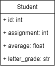

Sorting Objects on Two Fields¶
Make a class to store information about a student’s grades.

I have provided a file filled with grade information. It contains information for 30 students. Read the contents of the file into a list of Student objects.
Then, rearrange the array so that grades are sorted by student by assignment number. That is, first sort the list by student id, then assignment number within each student.
Open which file: gb.txt
Data loaded.
Data sorted.
Here are the sorted grades:
171 1 47 F
171 2 64 D
171 3 86 B
171 4 26 F
171 5 78 C
171 6 70 C
679 1 32 F
679 2 41 F
679 3 29 F
679 4 21 F
679 5 32 F
679 6 70 F
819 1 53 F
819 2 70 C
819 3 66 D
819 4 73 C
819 5 43 F
819 6 37 F
884 1 57 F
884 2 81 B
884 3 35 F
884 4 44 F
884 5 38 F
884 6 34 F
938 1 57 F
938 2 65 D
938 3 53 F
938 4 28 F
938 5 52 F
938 6 43 F
©2021 Daniel Gallo
This assignment is licensed under a Creative Commons Attribution-NonCommercial-ShareAlike 3.0 United States License.

Adapted for Python from Graham Mitchell’s Programming By Doing